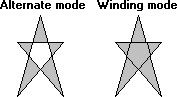

An application fills the interior of a region by calling the FillRgn function and supplying a handle that identifies a specific brush. When an application calls FillRgn , the system fills the region with the brush by using the current fill mode for the specified device context. There are two fill modes: alternate and winding. The application can set the fill mode for a device context by calling the SetPolyFillMode function. The application can retrieve the current fill mode for a device context by calling the GetPolyFillMode function.
The following illustration shows two identical regions: one filled using alternate mode and the other filled using winding mode.

To determine which pixels the system highlights when alternate mode is specified, perform the following test:
The system highlights the pixel if the count value is an odd number.
To determine which pixels the system highlights when winding mode is specified, perform the following test:
The system highlights the pixel if the count value is nonzero.
Â
Â